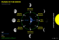
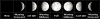
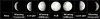
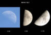
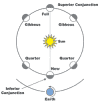
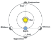
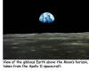

Phases of the Moon
- From any location on the Earth, the Moon appears to be a circular disk
which, at any specific time, is illuminated to some degree by direct
sunlight.
- The Sun always illuminates half the Moon, but, despite common folklore,
the Moon does not have a permanent dark side.
- As the Moon orbits the Earth, we get to see more or less of the
illuminated half. During each lunar orbit (a lunar month), we see the Moon's
appearance change from not visibly illuminated through partially illuminated
to fully illuminated, then back through partially illuminated to not
illuminated again.
- Although this cycle is a continuous process, there are eight distinct,
traditionally recognized stages, called
phases.
The phases designate both the degree to which the Moon is illuminated and
the geometric appearance of the illuminated part.
- New Moon, First Quarter, Full Moon, and Last Quarter phases are
considered to be primary phases and their dates and times are published in
almanacs and on calendars. The two crescent and two gibbous phases are
intermediate phases, each of which lasts for about a week between the
primary phases, during which time the exact fraction of the Moon's disk that
is illuminated gradually changes.
- The phases of the Moon are determined by the relative positions of the
Moon and Sun in the sky. First and Last Quarters occur when the Sun and Moon
are about 90 degrees apart in the sky. In fact, the two "half Moon" phases
are called First Quarter and Last Quarter because they occur when the Moon
is, respectively, one- and three-quarters of the way around the sky (i.e.,
along its orbit) from New Moon. Note that we don't say 2nd quarter or 4th
quarter and instead use full and new, respectively.
- The relationship of the Moon's phase to its angular distance in the sky
from the Sun allows us to establish very exact definitions of when the
primary phases occur, independent of how they appear. Technically, the
phases New Moon, First Quarter, Full Moon, and Last Quarter are defined to
occur when the excess of the apparent ecliptic (celestial) longitude of the
Moon over that of the Sun is 0, 90, 180, and 270 degrees, respectively.
These definitions are used when the dates and times of the phases are
computed for almanacs, calendars, etc.
- The percent of the Moon's surface illuminated is a more refined,
quantitative description of the Moon's appearance than is the phase.
Considering the Moon as a circular disk, the ratio of the area illuminated
by direct sunlight to its total area is the fraction of the Moon's surface
illuminated; multiplied by 100, it is the percent illuminated. At New Moon,
the percent illuminated is 0; at First and Third Quarters, it is 50%; and at
Full Moon, it is 100%. During the crescent phases the percent illuminated is
between 0 and 50% and during gibbous phases it is between 50% and 100%.
- The moon’s
orientation (tilt) with respect to your horizon shifts throughout the
night because we live under a curved dome of sky.
- Observers in the Northern and Southern Hemispheres see the moon
apparently upside-down with respect to each other.
- In the Northern Hemisphere, a waxing moon (from new moon to full
moon) increases its phase from
right to left. The opposite is seen in the Southern Hemisphere,
where a waxing moon (from new moon to full moon) increases its phase
from left to right.
- From the Northern Hemisphere, we look generally southward to see the
moon (or sun) crossing our sky. From the Southern Hemisphere, people
look generally northward to see the moon (or sun) crossing the sky.
- This
simulation of moon phases might help.




Phases of the planets
- When two or more heavenly bodies appear near each other in the sky, they are said to be in
conjunction.
- When two heavenly bodies are on opposite sides of the sky (differ in their celestial longitudes by 180°),
they are said to be in opposition.
- When an inner planet (Mercury or Venus) in conjunction with the Sun is
closest to the Earth (inferior conjunction), it appears in its "new" phase.
When farthest from the Earth, on the other side of the Sun (superior
conjunction), it is in its "full" phase. In both cases, the planet is
visible only around sunset or sunrise. Otherwise, it is lost in the
Sun's glare.
- When Earth is positioned on a line between the Sun and another planet
with a greater orbit (opposition), the planet is in its full phase and
shines brightly in Earth's night sky. When farthest from Earth on the other
side of the Sun (conjunction), the other planet also appears full, but is
visible only around sunset or sunrise.
- Even the Earth has phases, as viewed from outer space. Here is a photo
of a gibbous Earth taken by Apollo
astronauts on the Moon.



Page last modified: